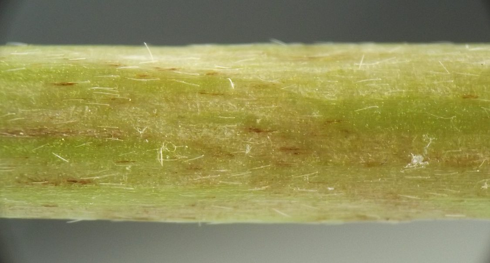
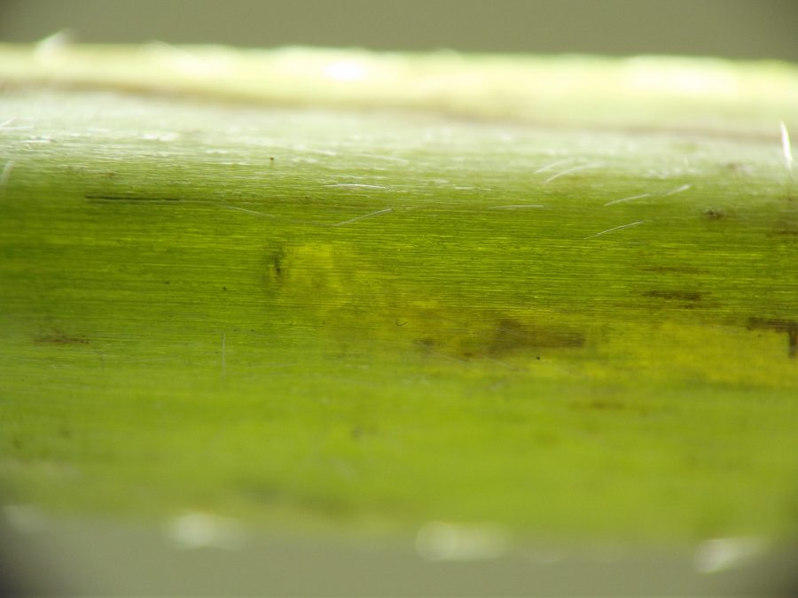
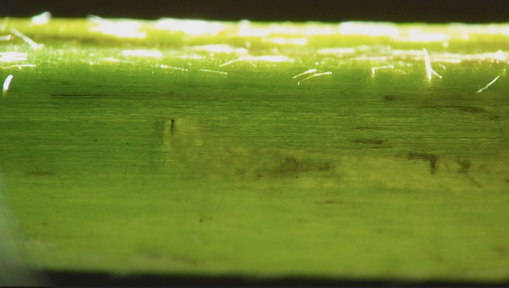
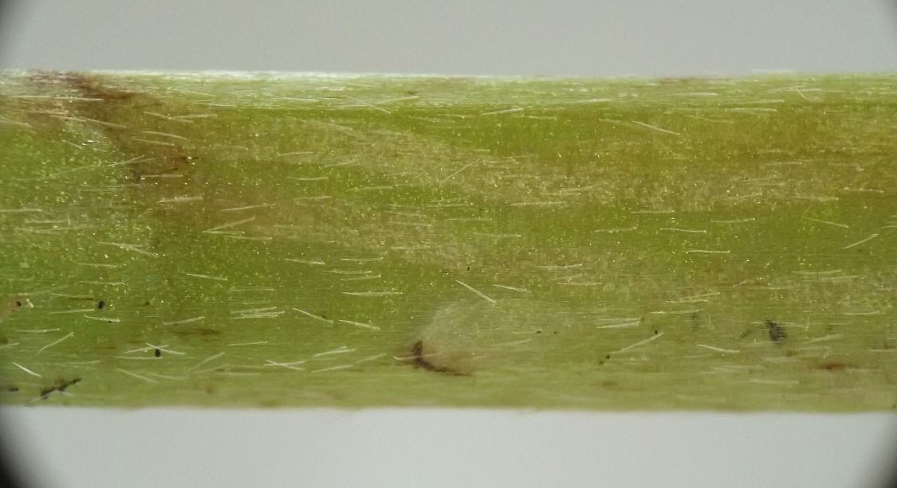
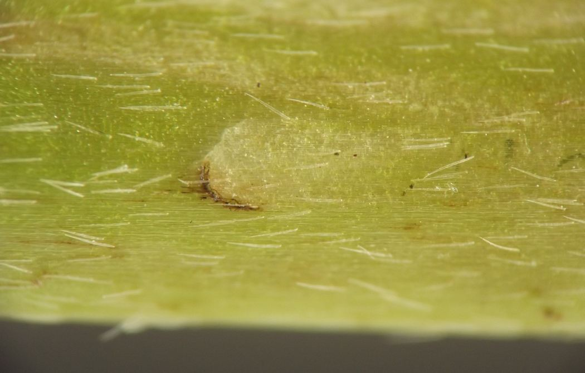
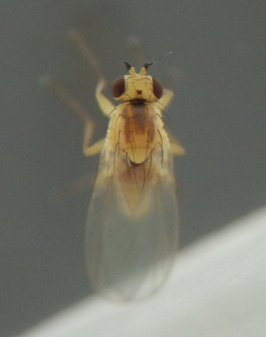
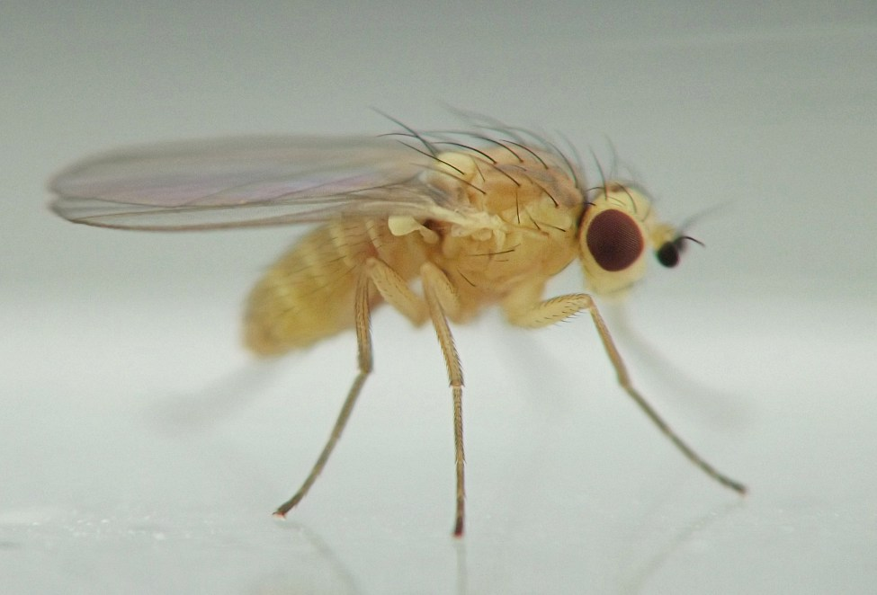

Stem miner (Diptera: Agromyzidae) in Ranunculus
| Record no.: | 0437 |
|---|---|
| Feeding guild: | Stem miner |
| Taxonomy: | Diptera: Agromyzidae: Phytomyza sp. |
| Stages observed: | trace, larva, puparium, adult |
| Distribution observed: | IA |
| Hosts in Ranunculus: | undetermined R. sp. (buttercup) |
Larvae form externally visible mines on the stems. Mines of older larvae show a subtle whitish discoloration relative to the ground color of the stem, while the very beginning of a mine that I photographed leading away from an oviposition site was brown. Another photograph shows a small amount of dark green frass at the end of a mine.
When finished feeding, larvae exit the stems through semicircular exit slits, pupating externally. I reared adults in early July from larvae collected in mid-June. The adults were yellow with slightly darker orange and gray markings on the dorsal surface of the thorax.
The host plant was a low-growing and creeping or at least rather prostrate Ranunculus living on the banks of a spring-fed stream, the stems moderately hairy with short to medium-length hairs held flat against the stem, the achenes of the plant compact with the main part of the achene roughly circular (i.e. about as long as wide) and the beak short (about a third to a fourth as long as the main part) and in some cases slightly curved at the tip.

 Prev
Prev
{kind=link}
{kind=link}

{kind=link}

{kind=link}

{kind=link}

{kind=link}

{kind=link}

{kind=link}
{kind=link}
{kind=link}
{kind=link}
Page created: February 4, 2026. Last update: none